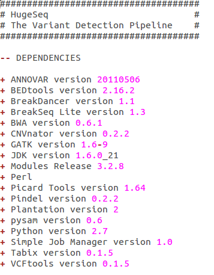
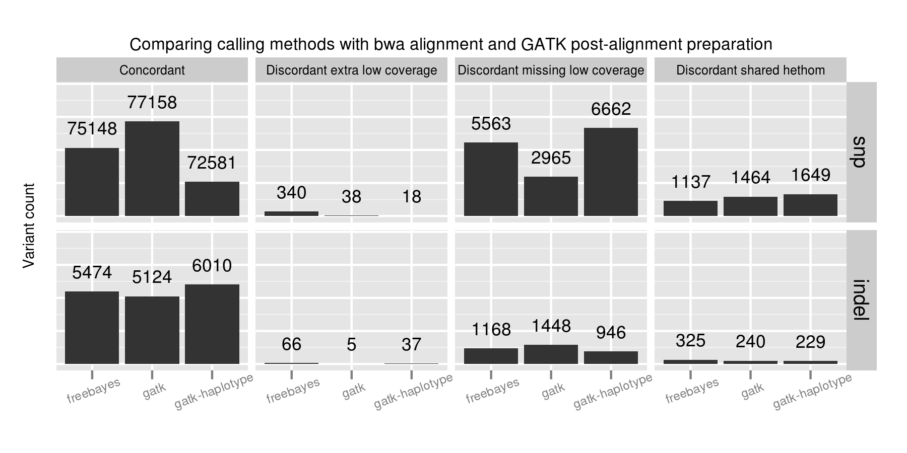

Variant calling pipelines: quantification, scaling and community development
Brad Chapman
Bioinformatics Core, Harvard School of Public Health
@chapmanb
20 July 2013
Challenges
Complex, rapidly changing pipelines

Large number of specialized dependencies
Quality differences between calling methods

Scaling on full ecosystem of clusters

Solution
http://www.amazon.com/Community-Structure-Belonging-Peter-Block/dp/1605092770

Development goals
- Quantifiable: assess variant quality
- Scalable: 1500 whole genome samples
- Reproducible: text-configurable, provenance, version tracking
- Community developed: open source, documented and widely deployable
- Accessible: Usable by researchers and non-scientists
Quantify quality
- Reference materials: http://www.genomeinabottle.org/
- Quantification details: http://j.mp/bcbioeval
Parallel scaling

- Infrastructure details: http://j.mp/bcbioscale
- IPython: http://ipython.org/ipython-doc/dev/parallel/index.html
Increasing parallel blocks

Reproducibility
Configuration
- files: [NA12878-NGv3-LAB1360-A_1.fastq.gz, NA12878-NGv3-LAB1360-A_2.fastq.gz] description: NA12878 analysis: variant2 genome_build: GRCh37 algorithm: aligner: bwa recalibrate: gatk realign: gatk variantcaller: [gatk, freebayes, gatk-haplotype] coverage_interval: exome coverage_depth: high platform: illumina quality_format: Standard validate: NA12878-nist-v2_13-NGv3-pass.vcf
Provenance
Community developed
- Fully automated installation: CloudBioLinux
- Deployable on multiple clusters (LSF, SGE, Torque)
- Open source and documented
Automated installation
Accessible
Galaxy
STORMSeq
Summary
- Community developed pipelines > challenges
- Focus
- Assessing quality: good science
- Scalability: finish in time
- Reproducibility: show your work
- Make widely available